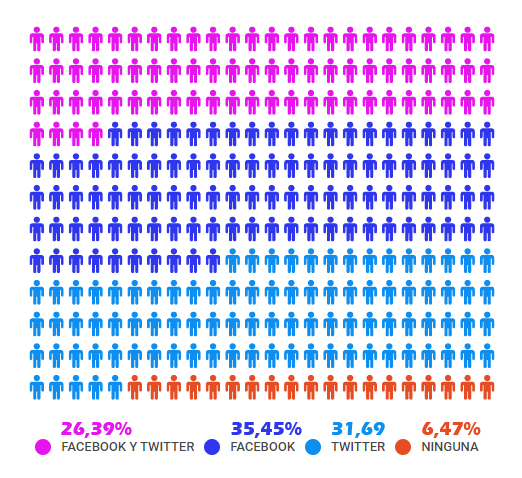

¿Para quién?
En muchas ocasiones la creación de redes sociales en un centro ha sido un proceso espontáneo: alguien del centro crea un perfil en la red que le es más afín e inicia el camino. Revertir ese proceso espontáneo es conveniente porque las redes de centro han de ser institucionales, como lo es todo lo que les representa y, sobre todo, han de ser las adecuadas para el público al que van dirigidas.
- Facebook: Siendo, como es, la red más presente en los centros educativos (si no incluimos los blogs como redes sociales), su uso es un tanto anárquico y podemos encontrarnos desde perfiles hasta páginas pasando por grupos. Digamos, en primer lugar, que el referente de un centro tiene que ser su página, que los perfiles no son recomendables para los centros educativos y que los grupos han de reservarse para proyectos, equipos de trabajo…Pero vamos con lo que nos importa: las destinatarias principales de facebook son las familias que, por generación tecnológica, siguen usando esta red social mayoritaria, de forma que abuelos (generación silenciosa o baby boomers, que incluye también a algún padre tardío) y las generaciones X y millenial, que constituyen el grueso parental, son de facebook. Si ese es nuestro público objetivo facebook es nuestra red y allí irá la mayoría de las informaciones del centro, no sólo las dirigidas a las familias, ya que se trata de una página pública.
- Twitter: Si lo que buscamos es conectar con otros centros, profesorado, universidades o las administraciones educativas… Twitter es nuestra red, una red que no es de amistades sino de intereses: seguimos lo que nos interesa, nos siguen quienes están interesados y no son los mismos seguidos y seguidores.
- Pinterest: Es una red social para compartir contenidos que, previamente, hemos recopilado (curado en la literal traducción del inglés) y puede ser una herramienta clave para cosechar, de forma colaborativa, contenidos pedagógicos que, una vez organizados, podemos compartir directamente a través de Pinterest, de otras redes sociales o desde blogs y webs.
- Youtube: Es nuestra red generalista; disponer de un canal de Youtube para compartir nuestros vídeos de forma pública o privada, recopilará toda esa actividad filmada a lo largo de los años y facilitará que el profesorado pueda usar una cuenta institucional en vez de la suya propia, que es lo que se viene haciendo.
- Telegram: Seguro que en la mayoría de los centros existen grupos de Whatsapp, sin embargo no es la aplicación más recomendable para mensajería-chat interno y, mucho menos, para contactar con las familias desde la tutoría, por ejemplo. Telegram permite ocultar el número de teléfono personal lo que la hace ideal para centros donde las relaciones personales pueden deteriorarse y no queremos que nuestro número telefónico esté a disposición de todo el claustro; incluso podemos arriesgarnos a crear grupos con padres y madres o con alumnado porque los grupos y los canales, además de seguirse en los dispositivos móviles, pueden seguirse mediante una URL desde cualquier ordenador sin necesidad de tener el móvil a mano para, como ocurre con Whatsapp, capturar un código QR.
- Instagram: Hemos dejado para el final Instagram para forzar la pregunta: ¿y el alumnado? ¿cómo comunicamos con el alumnado?. Obviamente mediante Instagram, si están en facebook o twitter, no lo usan apenas y será usando esta red de imágenes como podremos llegar a ellos. Pero no seamos ilusos, los post han de ser infográficos, integrando texto e imagen o en vídeo, incluir el contenido como pie de foto no nos garantiza que el mensaje se transmita.


Community Manager Educativo por Jose Ramón Olalla Celma bajo licencia Creative Commons Reconocimiento-NoComercial-CompartirIgual 4.0 Internacional License.